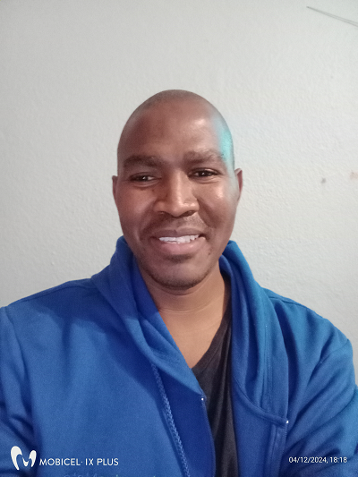

Benjamin De Koker

Summary
I enjoy solving problems and asking questions. I work in customer service and administration for a financial services company.
Education
- 2019 B.Eng (Electrical and Electronics) - Stellenbosch University
- 2014 Wealth Management Level 4 - African Resources and Training Group
- 2006 Matric Cerificate - Bastiaanse Senior Secondary School
Work experience
- May 2023 - present - Senior Disability Payments Adminstrator - Old Mutual
- Nov 2019 - May 2023 - Senior Death Claims Administrator - Old Mutual
- Mar 2014 - Jan 2019 - Senior Call Centre Agent - Old Mutual
Skills
- Microsoft Office - ★★★★☆
- COMPASS - ★★★☆☆
- Work Management Systems - ★★★★☆
Contact Me
Hobbies